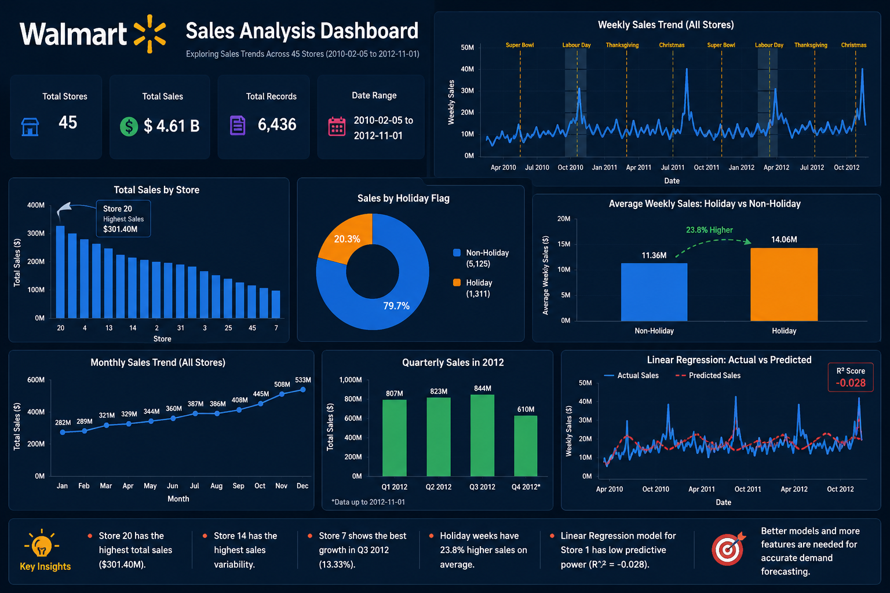
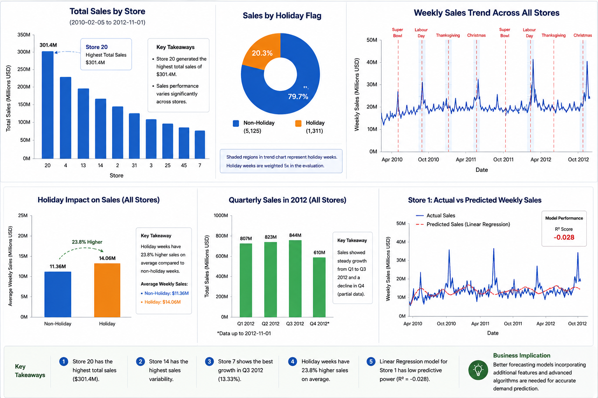
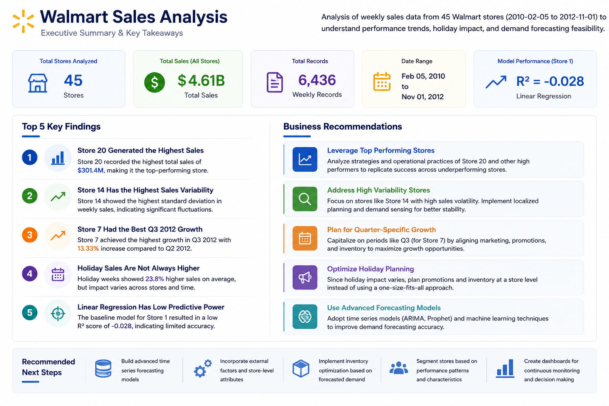

Walmart Sales Analysis
Exploratory analysis of Walmart’s multi-store sales data to uncover weekly sales patterns, seasonal demand shifts, holiday impact, and store-level performance trends across 45 retail locations, followed by a baseline demand forecasting model for Store 1.

Project Overview
This project analyzes historical Walmart sales data across 45 stores to understand how weekly sales vary over time, across store locations, and during key holiday periods. The objective was to uncover meaningful retail performance patterns and identify business insights that can support better demand planning and inventory decisions.
In addition to exploratory data analysis, the project also included a baseline demand forecasting exercise for Store 1 using Linear Regression. The model used time-based and macroeconomic features such as CPI, unemployment, fuel price, and temperature to evaluate whether these factors could help explain weekly sales behavior.
What I Analyzed
- Identified the Walmart store with the highest total sales across the dataset.
- Measured store-level sales volatility using standard deviation and coefficient of variation.
- Compared Q2 and Q3 2012 sales to identify stores with stronger quarterly growth.
- Analyzed holiday-week sales against non-holiday sales to understand promotional and seasonal impact.
- Created monthly and semester-level sales views to study seasonality and long-term demand patterns.
- Built a baseline demand forecasting model for Store 1 using date-driven and economic variables.
Tools & Technologies
- Python
- Pandas
- NumPy
- Matplotlib
- Seaborn
- Scikit-learn
- Exploratory Data Analysis
- Linear Regression
Dataset Snapshot
The dataset contains weekly Walmart store sales records from 5 Feb 2010 to 1 Nov 2012 for 45 stores. Each record includes weekly sales along with contextual variables such as holiday flag, temperature, fuel price, CPI, and unemployment. This made it possible to analyze both store performance trends and the potential effect of external economic conditions on retail demand.
Key Findings
Store 20 Generated the Highest Sales
Among all 45 stores, Store 20 recorded the highest total sales at $301.4M, making it the strongest performer in the dataset from a revenue standpoint.
Store 14 Showed the Highest Sales Volatility
Store 14 had the highest standard deviation in weekly sales, indicating that its performance fluctuated more heavily than other stores and may require closer forecasting attention.
Store 7 Had the Best Q3 2012 Growth
When comparing Q2 and Q3 sales in 2012, Store 7 showed the strongest quarterly growth with an increase of 13.33%, while several other stores recorded declines.
Holiday Weeks Did Not Uniformly Outperform
Holiday periods did not consistently exceed the average non-holiday sales level across all stores, suggesting that promotional timing and holiday demand effects may vary significantly by store and period.
Baseline Forecasting Model Had Limited Predictive Power
A Linear Regression model was built for Store 1 using time and economic variables. However, the model produced a weak R² score of approximately -0.03, indicating that a simple linear model was not sufficient to capture Walmart’s sales behavior accurately.
Visual Highlights


Outcome & Takeaways
This project combined exploratory retail analytics with a baseline forecasting exercise to understand how Walmart sales vary across stores, seasons, and holiday periods. The analysis surfaced meaningful store-level performance patterns, highlighted sales volatility across locations, and showed that holiday effects are not always straightforward. The forecasting step also revealed that simple linear modeling is not enough for accurate demand prediction in this type of retail data, pointing toward the need for more advanced time-series or machine learning approaches.